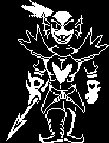
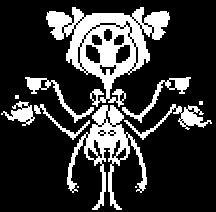
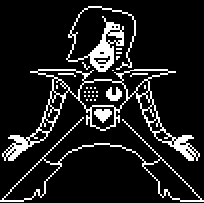

HOME/ |
FRISK/ |
BOSSES/ |
AÇÕES/ |
CRIADOR |

BOSSES
Os bosses de Undertale são os principais desafios da história. Cada um possui personalidade, habilidades e uma história própria. Diferente de muitos jogos, é possível derrotá-los lutando ou poupando-os por meio de ações e diálogos, tornando cada batalha única e influenciando o final do jogo.
TORIEL PAPYRUS UNDYNE MUFFET METTATONASGORE SANS OMEGA FLOWEY ASRIEL




